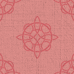

A Simple Example in Helvetica
This page was built to show how clean typography and balanced spacing can make a design feel more professional. Georgia was chosen for these paragraphs because it’s easy to read and gives the text a polished tone.
The layout is centered with a soft border around it to keep everything contained. Each section flows naturally into the next, and the image below adds a touch of contrast against the white background.
Links in this section are designed to stand out — bold and red by default, switching to blue with an underline when hovered. It’s a subtle but effective way to show interaction without clutter.
Modern design often focuses on clarity and usability. Whether you’re building a website, portfolio, or simple landing page, typefaces like Helvetica help create structure and consistency. Some designers, like those at McSweeney’s, use playful layouts to balance text and white space in creative ways.
Good pages use hierarchy and rhythm. Bold headlines, clean paragraphs, and clear links make the experience smoother for readers. Visual details — like borders, spacing, and font choices — help everything feel connected.
The photo above helps break up the text and adds visual balance to the page. Every element on this site has a purpose, from the typography to the spacing.